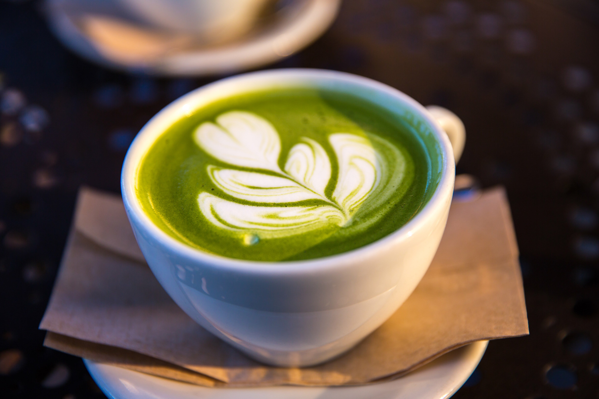

Caffe latte (or simply latte) (/ˈlɑːteɪ/ or /ˈlæteɪ/) is a coffee drink made with espresso and steamed milk. The word comes from the Italian caffè e latte [kafˌfɛ e ˈlatte], caffelatte [kaffeˈlatte] or caffellatte [kaffelˈlatte], which means "coffee & milk".
